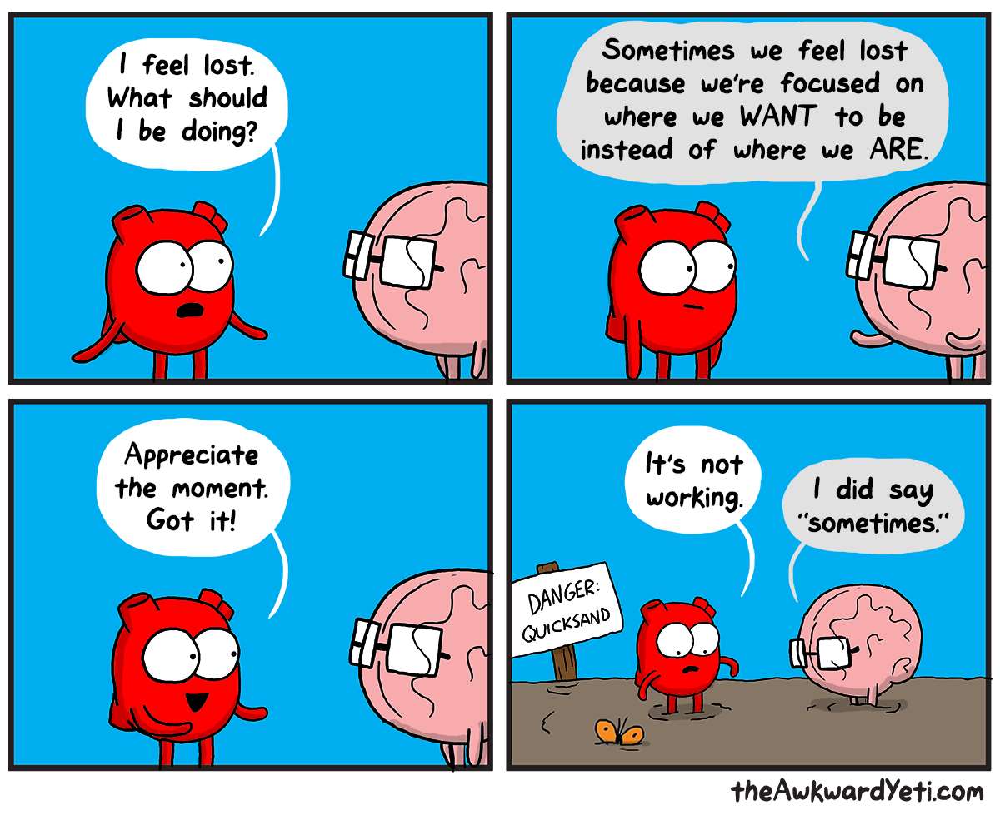

I'm a graduate of UW-Madison with training in psychology and computer science. I have experience in social and psychophysiology research methodologies and spent a few years in the healthcare software development industry where I conducted usability research and tested data and software quality.
I'm interested in using science to better understand the relationships between physiology, neural circuitry, and affective arousal, how these mechanisms interact with social behavior, and how these processes can go awry such as in PTSD, mood, and anxiety disorders.
These interests are motivated by the hope that, by understanding how deficits in emotion regulation arise and the context in which these basic functions can fail, perhaps we can identify vulnerabilities to mental illness and reveal opportunities for intervention.
I'm also convinced that nearly every psychological principle has a direct parallel in the Heart and Brain comics.
